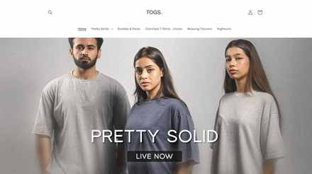

Building TOGS-88 from a name to a brand people wait for.
TOGS-88 — "The Original Good Stuff" — is a direct-to-consumer loungewear label: comfort-led fits, easy silhouettes, everyday colors. I founded it, and for five years I've run it across product, brand, content, the store and customer experience — and since mid-August 2026, its Meta advertising as well.
Situation
There was no loungewear on the market I actually wanted to wear or buy — most of what was available locally was either fast-fashion basic or priced like occasionwear for something you sleep in. I wanted to build "the original good stuff": comfort-led fits, in colors and prints people would actually reach for, made to be worn on repeat rather than sold as a single-season drop.
I started with no existing supply chain, no distribution, and no audience — just a name, a fit philosophy, and a willingness to run every part of it myself.
Decision
Rather than launching a broad clothing line, I committed to a narrow proposition: oversized, unisex-leaning loungewear — nightsuits, joggers, tees and fleece sets — sold direct-to-consumer through my own store and Instagram, not through wholesale or marketplaces. Staying narrow meant every fabric, fit and colorway decision could serve one clear idea instead of being pulled in different directions.

Approach
Building TOGS-88 has meant owning the full chain: product development across fabric and fit (solids, tie-dye, florals, fleece), a Shopify storefront built and run in-house, and a content system on Instagram — @wear.togs — that pairs clean product photography with founder-shot behind-the-scenes and a deliberately playful voice: outfit receipts, pop-culture riffs, shoot-day BTS. Brand, product and content were never separate workstreams here — the same person made the call on all three.


Testing
Over five years, close to everything has been treated as testable rather than fixed: new colorways and silhouettes released as small drops instead of full seasonal collections, pricing and discount structures run and compared against each other, and content formats — grid posts against Reels against Stories — read against what actually drove saves, DMs and completed sales rather than likes.


Signal
The clearest read on what was working came directly from the audience: an Instagram following built organically to 28.5K, product drops that sold through fast enough to prompt "you asked, you shopped, you sold it out" follow-up content, and customers returning across multiple product lines rather than buying once.
Source: @wear.togs public profile.


Action
TOGS-88's Meta advertising was originally run through an outside agency. When I wasn't satisfied with the results I was seeing, I made the decision to take the ad account in-house myself, starting mid-August 2026 — moving media buying, creative testing and reporting into the same hands already running the brand, product and content.
Result
Five years in, TOGS-88 is a functioning, self-sustaining D2C brand: an owned store, an organically built and engaged audience, and repeat drops that sell through. As of this case study, I'm also the person directly accountable for how the brand's paid media budget is spent, rather than a client waiting on someone else's report.


Learning
Running the creative and commercial sides of the same brand removed a translation layer I felt everywhere else — no brief handed off, no waiting on someone else's read of what a number meant. The tradeoff is real: five years of being the only person who has to be right about fit, fabric, price and content at once.
That's the habit I now bring into the accounts I run for other people — don't hand off the parts of a decision you can't verify yourself.